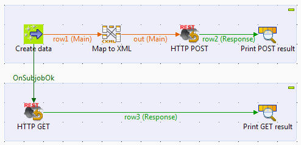
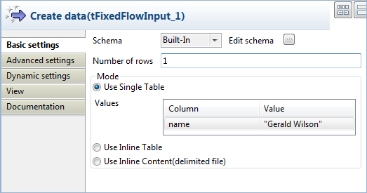
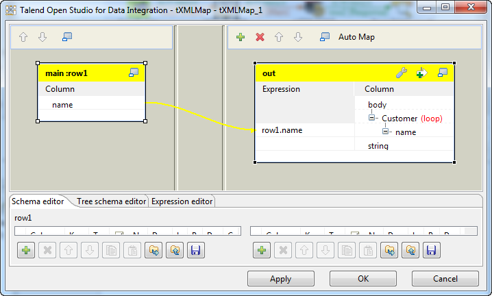
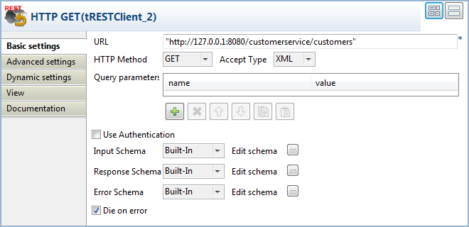
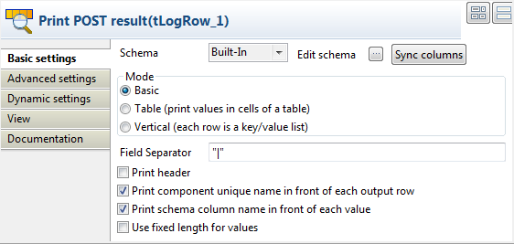
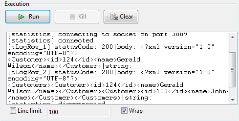

|
Famille de composant |
ESB/REST | |
|
Fonction |
Le composant tRESTClient envoie des requêtes HTTP et HTTPS à un fournisseur des services Web REST (REpresentational State Transfer) et obtient les réponses correspondantes. Ce composant s'intègre parfaitement dans Talend Runtime pour un support de HTTPS et, ultérieurement, le support de fonctionnalités de qualité de service. | |
|
Objectif |
Le composant tRESTClient est utilisé pour interagir avec des fournisseurs de services Web RESTful, en envoyant des requêtes HTTP et HTTPS, à l'aide de CXF (JAX-RS). | |
|
Basic settings |
URL |
Saisissez l'URL du serveur REST à invoquer. |
|
|
HTTP Method |
Dans cette liste, sélectionnez une méthode HTTP décrivant l'action souhaitée. Les significations des méthodes HTTP sont sujets aux définitions de votre fournisseur de service Web. Les définitions des méthodes HTTP généralement acceptées sont listées ci-dessous : - GET : récupère des données du côté serveur selon les paramètres donnés. - POST : charge des données dans le serveur selon les paramètres donnés. - PUT : met à jour des données selon les paramètres donnés, ou crée les données, si elles n'existent pas. - DELETE : supprime les données selon les paramètres donnés. |
| Content Type | Sélectionnez XML, JSON ou FORM selon le type de média du contenu à charger dans le serveur. Cette liste apparaît lorsque vous sélectionnez la méthode HTTP POST ou PUT. | |
| Accept Type | Sélectionnez le type de média que le côté client est préparé à accepter pour la réponse, du côté serveur. Les options disponibles sont : XML, JSON et ANY. Lorsque ANY est sélectionnée, le message de réponse peut être de tout type et sera transformé en une chaîne de caractères (string). | |
| Query parameters | Spécifiez les paramètres de la requête sous forme de paires nom-valeur. Cette option est généralement utilisée avec la méthode GET. | |
| Use Authentication | Cochez cette case si l'authentification est requise du côté du serveur REST. Une fois cochée, vous devez saisir votre identifiant et votre mot de passe. Seule l'authentification Basic HTTP est supportée. | |
|
|
Schema et Edit Schema |
Un schéma est une description de lignes, il définit le nombre de champs qui sont traités et passés au composant suivant. Ce composant utilise trois schémas built-in, en lecture seule. Cliquez sur Edit Schema pour visualiser la structure du schéma. AvertissementModifier le type du schéma peut conduire à une perte de cette structure et à un échec de l'exécution du composant. |
| Input Schema |
Schéma des données d'entrée. Le schéma contient deux colonnes : - body : stocke le contenu des données d'entrée structurées - string : stocke le contenu d'entrée lorsqu'il est de type string, ou est géré comme tel. | |
| Response Schema |
Schéma pour la réponse du serveur. Ce schéma est passé au composant suivant à l'aide d'un lien Row > Response et contient trois colonnes: - statusCode : stocke le code de statut HTTP du serveur. - body : stocke le contenu d'une réponse structurée du serveur. - string : stocke le contenu de la réponse du serveur, lorsqu'elle est de type string ou gérée comme telle. | |
| Error Schema |
Schéma pour les informations d'erreur. Ce schéma est passé au composant suivant via un lien Row > Error et contient deux colonnes : - errorCode : stocke le code de statut HTTP du serveur lorsqu'une erreur survient durant le processus d'invocation. L'interprétation des codes d'erreur spécifiques est soumise aux définitions de votre fournisseur de services Web. Pour des informations de référence, consultez le site http://fr.wikipedia.org/wiki/Liste_des_codes_HTTP. - errorMessage : stocke le message d'erreur correspondant au code d'erreur. | |
| Die on error | Cette case est cochée par défaut et stoppe le Job en cas d’erreur. Décochez cette case pour terminer le traitement avec les lignes sans erreur, et ignorer les lignes en erreur. | |
|
Advanced settings |
Connection timeout |
Configurez le temps, en secondes, avant suspension, durant lequel le client attend pour établir une connexion. Si ce champ est configuré à 0, le client continue indéfiniment à essayer d'ouvrir une connexion. |
| Receive timeout | Configurez le temps, en secondes, durant lequel le client attend pour obtenir une réponse, avant suspension de la connexion. Si ce champ est configuré à 0, le client attend indéfiniment. | |
| HTTP Headers |
Saisissez la (les) paire(s) nom-valeur des en-têtes HTTP pour définir les paramètres de l'opération HTTP demandée. Pour les définitions spécifiques des en-têtes HTTP, consultez votre fournisseur de services Web REST. Pour des informations de référence, consultez en.wikipedia.org/wiki/List_of_HTTP_headers (en anglais). | |
| Use HTTP proxy | Cochez cette case si vous utilisez un serveur proxy. Une fois cochée, vous devez saisir les informations de connexion : hôte, port, identifiant et mot de passe. | |
| tStatCatcher Statistics |
Cochez cette case pour collecter les données de log, aussi bien au niveau du Job qu’au niveau de chaque composant. | |
|
Utilisation |
Ce composant est utilisé comme client de service Web RESTful pour communiquer avec un fournisseur de services RESTful, avec la possibilité de saisir une requête dans un service, à l'intérieur d'un Job et de retourner le résultat du Job comme réponse du service. Selon les actions à effectuer, le composant peut être un composant de début ou intermédiaire. | |
| Connections |
Liens de sortie : Row : Response ; Error. Trigger : OnSubjobOk ; OnSubjobError ; Run if ; OnComponentOk ; OnComponentError.
Liens d'entrée : Row : Main ; Reject. Trigger : Run if ; OnSubjobOk ; OnSubjobError ; OnComponentOk ; OnComponentError. Pour plus d'informations concernant les connexions, consultez le Guide utilisateur de Talend Open Studio. | |
Ce scénario décrit un Job composé de deux sous-jobs : le premier contient quatre composants et permet d'ajouter un enregistrement client à un service Web RESTful. Le second contient deux composants récupérant des informations client du serveur. Lorsque le Job est exécuté, les informations correspondantes sont affichées dans la console de la vue Run.
Dans ce scénario, le service Web utilisé en exemple possède la structure XML suivante, dans laquelle seul le contenu du nœud name est personnalisable :
<Customers>
<Customer>
<id>id1</id>
<name>Name1</name>
</Customer>
<Customer>
<id>id2</id>
<name>Name2</name>
</Customer>
...
</Customers>Dans le premier sous-job, un composant tXMLMap est utilisé pour adapter la structure des données d'entrée à la structure du service Web RESTful.
Déposez les composants suivants de la Palette dans l'espace de modélisation graphique : un tFixedFlowInput, un tXMLMap, deux composants tRESTClient et deux tLogRow.
Reliez le tFixedFlowInput au tXMLMap à l'aide d'un lien Row > Main.
Reliez le composant tXMLMap au premier tRESTClient à l'aide d'un lien Row > Main. Nommez cette connexion out dans cet exemple.
Reliez le premier tRESTClient au premier tLogRow à l'aide d'un lien Row > Response afin de terminer le premier sous-job, qui charge un enregistrement client sur le serveur et affiche les informations de réponse du serveur.
Reliez le second tRESTClient au second tLogRow à l'aide d'un lien Row > Response afin de terminer le second sous-job, qui récupère et affiche les informations client du côté serveur.
Reliez les deux sous-jobs à l'aide d'un lien Trigger > OnSubjobOk.
Nommez les composants comme vous le souhaitez afin que leur nom reflète leur rôle.

Procédure 12.5. Configurer les données d'entrée et le mapping de la structure
Double-cliquez sur le composant tFixedFlowInput pour ouvrir sa vue Basic settings.
Cliquez sur le bouton [...] à côté du champ Edit schema puis configurez le schéma des données d'entrée dans la boîte de dialogue [Schema], puis cliquez sur OK pour fermer la boîte de dialogue [Schema].
Dans cet exemple, le schéma d'entrée possède une colonne, name.
Dans la table Values sous l'option Use Single Table, saisissez dans la colonne Value le nom d'un client, Gerald Wilson par exemple, entre guillemets doubles.
Dans le champ Number of rows, saisissez 1.
Double-cliquez sur le tXMLMap pour ouvrir l'éditeur de mapping.
Dans la table de sortie, cliquez-droit sur le nœud root (racine) par défaut de la colonne body. Sélectionnez Rename dans le menu contextuel et renommez le nœud Customer. Vérifiez que Customer est bien l'élément de boucle car la structure XML du service Web à invoquer effectue une boucle sur cet élément.
Cliquez-droit sur le nœud Customer, sélectionnez Create Sub-Element dans le menu contextuel, puis créez un sous-élément nommé name.
Déposez la colonne name de la table d'entrée sur le nœud name dans la table de sortie, puis cliquez sur OK pour valider le mapping et fermer l'éditeur.
Procédure 12.6. Configurer les actions REST et l'affichage dans la console
Double-cliquez sur le composant tRESTClient pour ouvrir sa vue Basic settings.

Dans le champ URL, saisissez l'URL du service Web que vous souhaitez invoquer. Notez que l'URL fournie dans ce scénario est donnée uniquement à titre d'exemple.
Dans la liste HTTP Method, sélectionnez POST pour envoyer une requête HTTP et créer un nouvel enregistrement.
Dans la liste Content Type, sélectionnez le type de contenu à charger sur le serveur, XML dans cet exemple.
Dans la liste Accept Type, sélectionnez le type que le côté client accepte pour la réponse du serveur, XML dans cet exemple. Laissez les autres paramètres tels qu'ils sont.
Double-cliquez sur le second tRESTClient pour ouvrir sa vue Basic settings.
Dans le champ URL, saisissez la même URL que dans le premier tRESTClient.
Dans la liste HTTP Method, sélectionnez GET pour envoyer une requête HTTP afin der récupérer les enregistrements existants et sélectionnez XML dans la liste Accept Type. Laissez les autres paramètres tels qu'ils sont.
Dans la vue Basic settings de chaque tLogRow, cochez les cases Print component unique name in front of each output row et Print schema column name in front of each value afin de mieux identifier les flux de sortie.

Appuyez sur Ctrl+S pour sauvegarder votre Job.
Appuyez sur la touche F6 ou sur le bouton Run de la vue Run pour exécuter le Job.
La console montre que le premier composant tRESTClient envoie une requête HTTP au serveur afin de créer un nouveau client nommé Gerald Wilson. Le second tRESTClient lit les données du serveur, y compris les informations du nouveau client créé.
